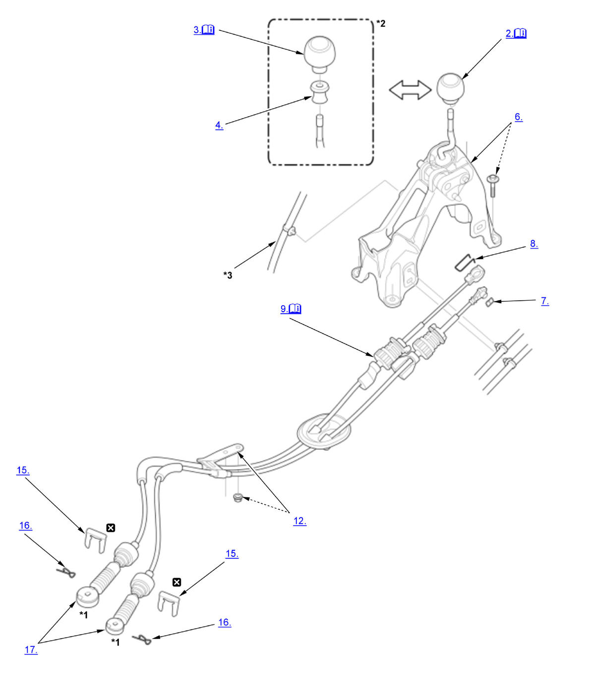

Gearshift Mechanism Removal and Installation (Except K20C1 (M/T)): Removal: Procedure
WARNING: This page is about a different variant/trim than selected.
NOTE:
Numbered call-outs in figure pertain to list numbers in following procedure.

Courtesy of HONDA, U.S.A., INC. |
Detailed information, notes, and precautions |
 |
Replace |
| *1 | Do not wipe off the special grease applied to the area of the change wire ends |
| *2 | Si |
| *3 | For some models |
- Vehicle - Lift
- Shift Lever Knob - Remove (Except Si)
1. Lower the shift lever boot (A) to release the hooks from the boot. 2. Remove the shift lever knob (B).
- Shift Lever Knob - Remove (Si)
1. Lower the shift lever boot (A) while releasing the hooks (B) from the shift lever boot ring (C). 2. Loosen the shift lever boot ring clockwise.
3. Remove the shift lever knob (D).
- Shift Lever Boot Ring - Remove (Si)
- Center Console - Remove
- Shift Lever Housing - Remove
- Clip Spring - Remove
- Clamp - Remove
- Change Wire - Remove (Shift Lever Side)
NOTE:
- While expanding the lock tab (A), rotate the socket holder retainer (B) counterclockwise until it stops, then remove the socket holder (C).
- Do not remove the change wire by pulling the change wire guide (D).
- Engine Undercover - Remove
NOTE: Remove the necessary part(s).
- Exhaust Pipe A - Remove
- Change Wire Bracket - Remove
- Air Cleaner - Remove
- Intake Air Duct - Remove
- Change Wire Clip - Remove
- Lock Pin - Remove
- Change Wire - Remove (Transmission Side)